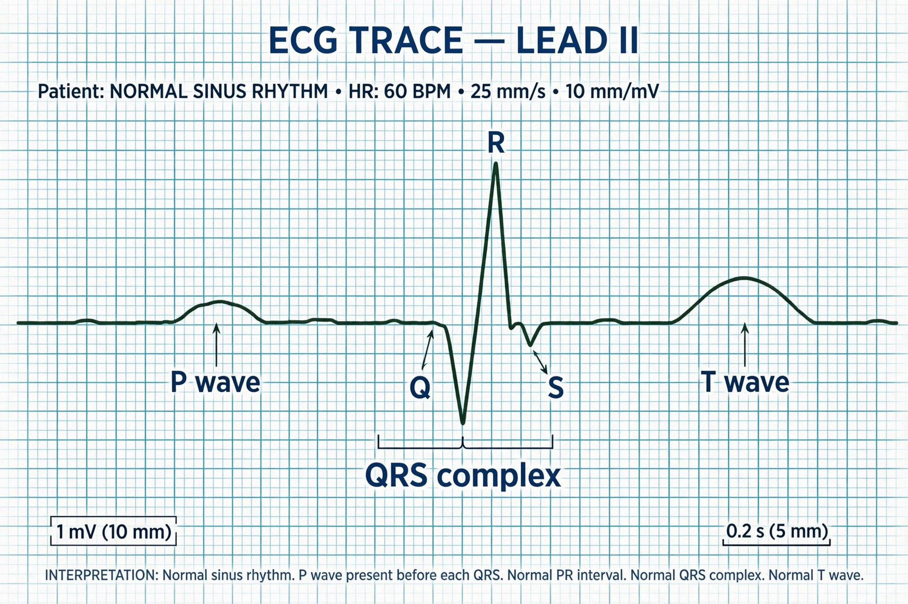

| Electrocardiography | |
|---|---|
| Synonyms | ECG, EKG |
| Specialty | Cardiology |
| Purpose | Record electrical activity of the heart |
| Inventor | Willem Einthoven (practical electrocardiograph, 1903) |

Electrocardiography is the process of producing an electrocardiogram (ECG or EKG), a recording of the heart's electrical activity through repeated cardiac cycles. It is an electrogram of the heart which is a graph of voltage versus time of the electrical activity of the heart using electrodes placed on the skin.
The overall goal of performing electrocardiography is to obtain information about the electrical function of the heart. Medical uses for this information are varied and include diagnosing arrhythmias, myocardial infarction (heart attack), conduction abnormalities, and electrolyte disturbances, as well as monitoring patients during surgery and in intensive care.
A standard electrocardiogram uses ten electrodes — four on the limbs and six on the chest — to produce twelve views ("leads") of the heart's electrical activity. Each cardiac cycle produces a characteristic waveform: the P wave (atrial depolarisation), the QRS complex (ventricular depolarisation) and the T wave (ventricular repolarisation).
The Dutch physiologist Willem Einthoven developed the string galvanometer electrocardiograph in 1903 and received the Nobel Prize in Physiology or Medicine in 1924 for his work. The abbreviation EKG derives from the German Elektrokardiogramm.
See also: Cardiology · Arrhythmia · Willem Einthoven · Myocardial infarction